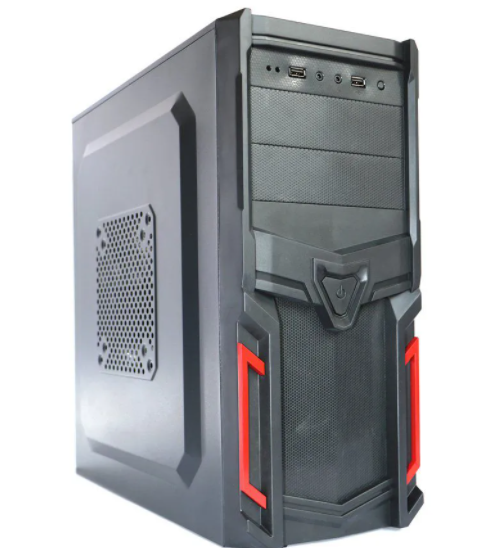
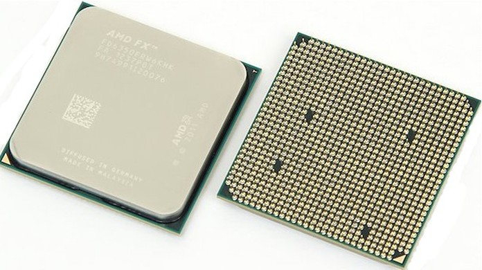
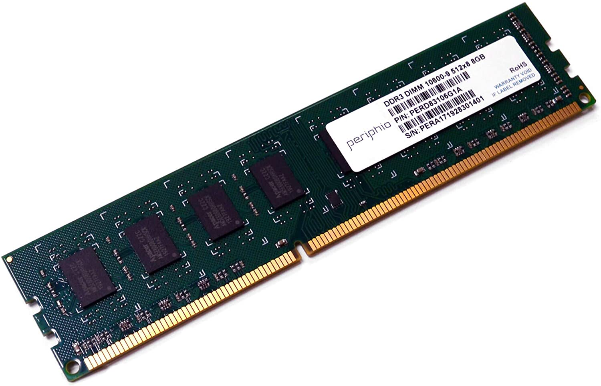
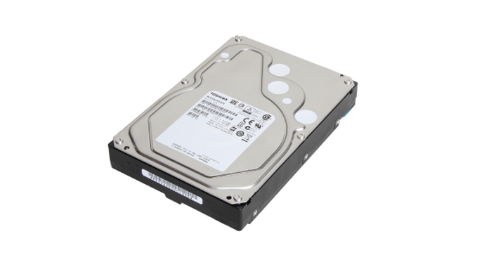

Se você é novo nesse mundo tecnológico, ou se você somente não se interessa muito por esses assuntos de informática, você provavelmente chama o computador de “CPU”.
A tela, o teclado, a caixa preta que tem um monte de peças que fazem tudo funcionar, todos juntos fazem parte do grande termo “computador”. E quer saber? Para a maioria das pessoas isso está ok! Eles vão entender o que você quer dizer.
Às vezes, se a gente for um pouco mais específico alguns problemas podem ser evitados. Por exemplo, se alguma coisa está com problema com seu computador é bom saber o nome certo do que está com problema para explicar o que está acontecendo para os outros. Isso pode até te ajudar a não cair em golpes ou ser enganado por profissionais mal-intencionados.
Vamos fazer um passeio pelas partes do computador, descrevendo cada parte do seu computador, como ela parece e onde você vai achá-lo.
O Monitor
Vamos começar com o mais fácil de encontrar e de reconhecer – o monitor.

O monitor é a tela em que você passa a maior parte do tempo olhando para ela enquanto você usa o computador.
É importante entender que o seu monitor somente mostra os dados que ele recebe do computador, ele não faz nada além disso, salvo em casos específicos.
O Gabinete
Esse é a parte que algumas pessoas chamam de CPU, mas será que esse é o termo correto? Acredite se quiser, o termo correto é Gabinete ou Torre.
Mas o que é CPU? Calma, que mais pra frente vamos falar sobre ele.
O gabinete é basicamente uma caixa, normalmente metálica, que protege os componentes do seu computador. Normalmente na parte da frente ele tem um botão de ligar e desligar, algumas entradas USB; e, na parte de trás ele tem um monte de conectores para um monte de cabos diferentes (vamos ter um texto específico sobre isso, aguarde).
Só para deixar claro, o gabinete é somente uma caixa metálica que protege os componentes que em conjunto são chamados de Computador.
O Processador
Agora sim, o famoso CPU! Essas três letras representam as iniciais das palavras Unidade Central de Processamento, ou Central Processing Unit em inglês, muito conhecido também como Processador.
Ele é um chip de mais ou menos uns 8 cm² que fica dentro do seu gabinete, nele existem milhões de transistores e cada um deles é capaz de executar muitas operações matemáticas.
O processador é basicamente o “cérebro” do seu computador. Ele é onde os “pensamentos” acontecem na forma de milhões de cálculos por segundo.
Hoje em dia, os processadores trabalham com núcleos, ou cores em inglês, e geralmente, quanto maior o número de núcleos maior é a potência do computador.
A Memória
Apesar do seu processador ser muito bom em cálculo, ele não tem memória nenhuma. É aí que entra o componente chamado “memória”. Nome bem intuitivo, não é?
Existem duas partes do seu computador que são responsáveis pela memória, a memória RAM e o HD. Primeiramente vamos falar da memória RAM.
RAM significa Memória de Acesso Aleatório, ou Random Access Memory em inglês. Ela não armazena nada de forma permanente, ela serve apenas como um espaço temporário para que o CPU possa fazer os cálculos necessários, sendo apagada toda vez que o computador é desligado.
A memória RAM lembra uma pequena régua feita de circuitos que tem diversos contatos em uma de suas extremidades. Ela é conectada diretamente na placa mãe do seu computador (não sabe o que é a placa mãe? Calma, vamos ter texto disso também!), que por sua vez está dentro do seu gabinete.
Provavelmente você já percebeu que o CPU e a memória RAM devem andar juntos, não é? Então para que o computador tenha um bom desempenho é necessário que os dois sejam compatíveis.
O Disco Rígido (HD)
E por fim, o disco rígido, ou hard drive do inglês, ou simplesmente HD também é responsável pela memória do computador, mas diferentemente da memória RAM, o HD não é apagado ao desligar o computador.
Normalmente o HD usa discos magnéticos para guardar arquivos, fotos, vídeos, programas, jogos, etc.
Texto de Jefferson Lucas